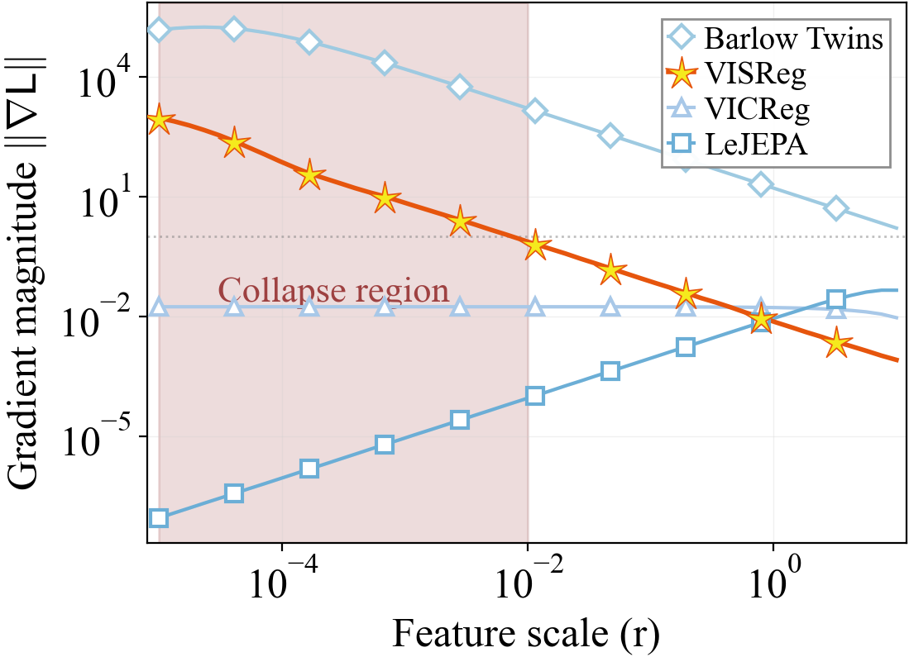
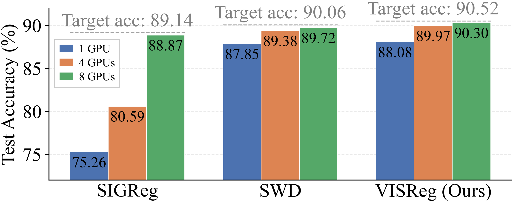
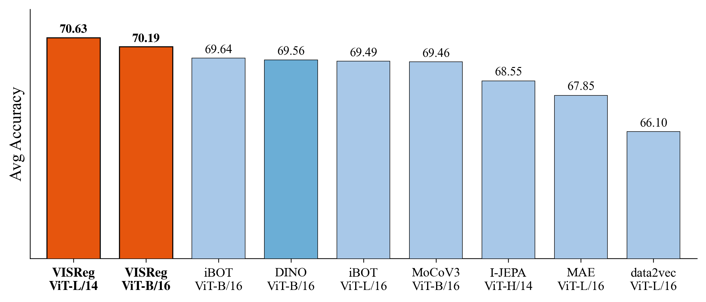
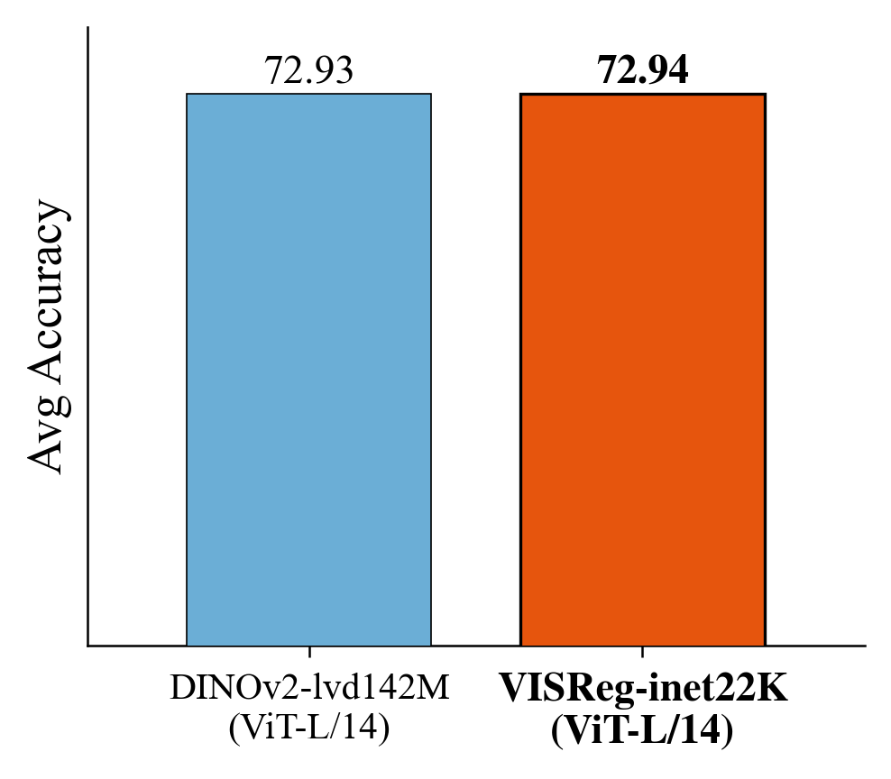
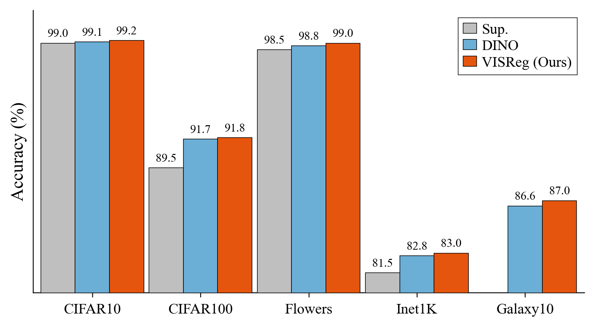
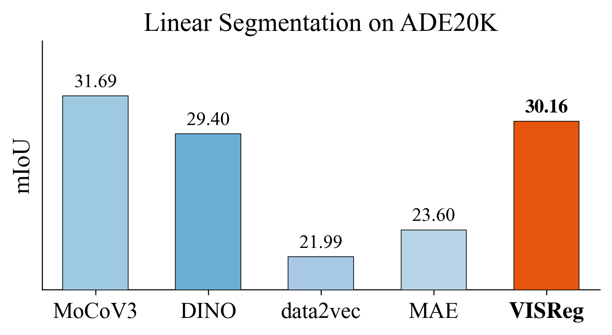
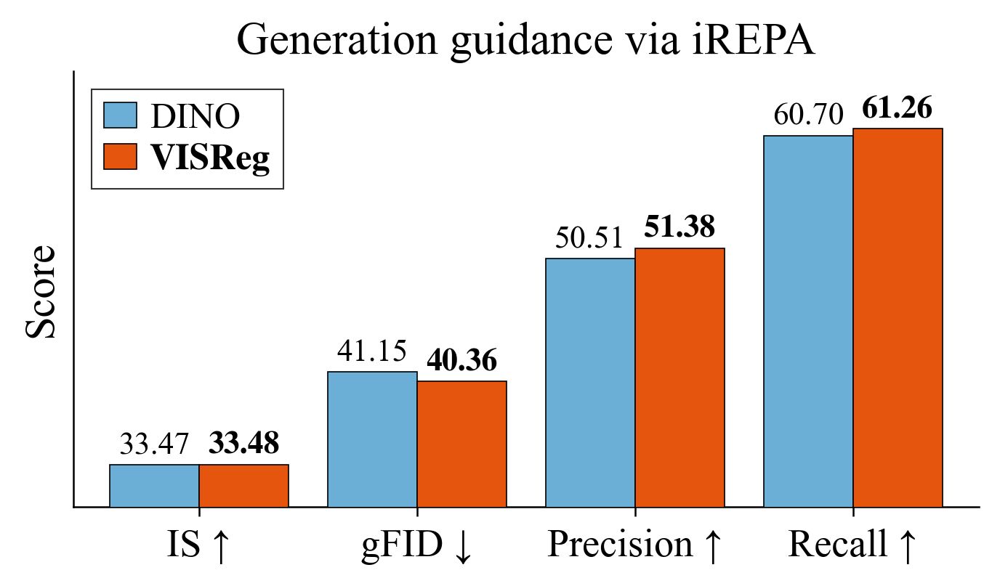

Key Findings
Robust to low-quality datasets: Methods grounded in the Cramér–Wold theorem are stable to low-quality datasets (e.g., long-tailed, sparse) and the slices/projections for regularization loss can be naturally increased in distributed training which ensures training stability.
Best OOD performance: VISReg has the best OOD linear probe accuracy at ImageNet-1K level. At a larger scale, VISReg trained on ImageNet-22K (14M images) is able to achieve similar average accuracy to DINOv2 trained on LVD-142M (142M images) on OOD benchmarks.
Good downstream applications: VISReg has on-par or better performance than DINOv1 on transfer learning, dense instance prediction, and generation guidance.
Why Decoupled Regularization?
Self-supervised learning methods like DINO, iBOT, and I-JEPA rely on heavy heuristics — EMA updates, teacher-student architectures, stop-gradient, frozen layers — to prevent embedding collapse. LeJEPA showed that regularizing the embedding space to an isotropic Gaussian can replace these heuristics entirely. However, its regularizer (SIGReg) has a critical weakness: its gradient vanishes precisely when the model needs it most — at collapse.

This motivates our approach: decouple the regularization into independent scale (variance) and shape (sketching distribution geometry) components. By operating on these separately, VISReg is more robust to collapse, more efficient in high dimensions, and more resilient to low-quality datasets.
VISReg: Variance-Invariance-Sketching Regularization
VISReg regulates the embedding space through three complementary objectives:
Scale Regularization
We constrain the per-dimension variance to prevent magnitude collapse: \[\mathcal{L}_{\text{scale}} = \frac{1}{D}\sum_{j=1}^{D}(1 - \sigma_j(\hat{Z}))^2\] The gradient approaches a constant when the model collapses, ensuring stable recovery.
Shape Regularization
After normalizing out scale, we align the distribution geometry to the isotropic Gaussian using the Sliced Wasserstein Distance (SWD), grounded in the Cramér-Wold theorem: \[\mathcal{L}_{\text{shape}} = \frac{1}{K}\sum_{k=1}^{K}\left\|\text{sort}(\tilde{Z}w_k) - q_N\right\|_2^2\] where \(q_N\) are the Gaussian quantiles and \(w_k\) are random projection directions.
Combined Objective
\[\mathcal{L}_{\text{Reg}} = \mathcal{L}_{\text{scale}} + \mathcal{L}_{\text{shape}} + \mathcal{L}_{\text{center}}\] Combined with an Euclidean invariant prediction loss, the full VISReg objective is: \[\mathcal{L}_{\text{VISReg}} = (1-\lambda)\mathcal{L}_{\text{pred}} + \lambda\mathcal{L}_{\text{Reg}}\]
def visreg(z, K=64):
# 1. Center loss
mu = z.mean(dim=0)
L_center = mu.pow(2).mean()
# 2. Scale loss
z_cent = z - mu
std = z_cent.std(dim=0, unbiased=False)
L_scale = (1.0 - std).pow(2).mean()
# 3. Shape loss: Sliced Wasserstein Distance
z_norm = z_cent / (std.detach())
W = torch.randn(D, K)
W /= W.norm(p=2, dim=0)
p_sorted = torch.sort(z_norm @ W, dim=0).values
u = torch.arange(1, N+1) / (N+1)
target = Normal(0, 1).icdf(u)
L_shape = (p_sorted - target).pow(2).mean()
return L_scale + L_shape + L_centerScaling Analysis
VISReg has complexity \(\mathcal{O}(NDK)\), linear in all scaling factors. Crucially, the \(K\) random slices can be distributed across GPUs — generating \(K/M\) slices per GPU on \(M\) GPUs yields the same accuracy as \(K\) slices on one GPU. This keeps \(K\) constant during scaling.

Results
Out-of-Distribution Performance
We evaluate on 6 OOD datasets spanning medical (ChestXRay, RetinaMNIST, OrganAMNIST), space (Galaxy10), aerial (AID), and texture (DTD) domains. VISReg achieves the best average OOD accuracy across all methods and backbone scales.

10x Data Efficiency
When pre-trained on ImageNet-22K, VISReg with ViT-L/14 achieves comparable OOD performance to DINOv2, which was pre-trained on the 10× larger LVD-142M dataset. This demonstrates the strong generality of representations learned by VISReg.

Transfer Learning
Despite having lower linear probe accuracy on in-domain datasets than DINO, VISReg outperforms DINO after fine-tuning on all tested datasets (CIFAR-10, CIFAR-100, Flowers, ImageNet-1K, Galaxy10), indicating stronger transferable representations.

Dense Prediction & Generation Guidance


Robustness to Low-Quality Data
On long-tailed (ImageNet-LT) and low-rank (Galaxy10) datasets, VISReg successfully prevents collapse and learns meaningful embeddings, while DINO fails without careful hyperparameter tuning.
Table 1. Linear probe accuracy on ImageNet-LT. ViT-S/8 trained for 400 epochs from scratch. Our VISReg method outperforms all methods at all levels. DINO fails to learn meaningful embeddings. * means increasing the weight of shape loss.
| Method | Overall | Many | Medium | Few |
|---|---|---|---|---|
| SWD | 31.85 | 51.54 | 22.70 | 8.36 |
| SIGReg | 32.00 | 51.86 | 22.88 | 7.92 |
| VISReg | 32.11 | 51.55 | 23.19 | 8.52 |
| VISReg* | 35.14 | 54.49 | 26.87 | 9.40 |
| VICReg | 33.08 | 52.29 | 24.63 | 8.54 |
| DINO | 5.13 | 12.22 | 0.82 | 0.24 |
Table 2. In-domain linear probe accuracy on Galaxy10. The model is trained from scratch to test the performance of methods on the low-rank task. SIGReg, SWD, and VISReg successfully prevent the training from collapsing while obtaining a good linear probe accuracy, whereas DINO struggles to learn meaningful features. * means increasing the weight of shape loss.
| Method | SWD | SIGReg | VISReg | VISReg* | VICReg | DINO |
|---|---|---|---|---|---|---|
| Acc. | 80.60 | 80.50 | 80.51 | 80.76 | 79.93 | 73.49 |
Conclusion
VISReg demonstrates that decoupling embedding regularization into scale and shape yields a self-supervised method that is more stable, more efficient, and produces more generalizable representations than existing approaches. Without any training heuristics, VISReg achieves SOTA OOD performance and strong transfer learning capabilities, pointing toward a promising direction for foundation model training.
Citation
@inproceedings{wu2026visreg,
title = {VISReg: Variance-Invariance-Sketching Regularization for JEPA training},
author = {Wu, Haiyu and Balestriero, Randall and Levine, Morgan},
booktitle = {arXiv},
year = {2026}
}